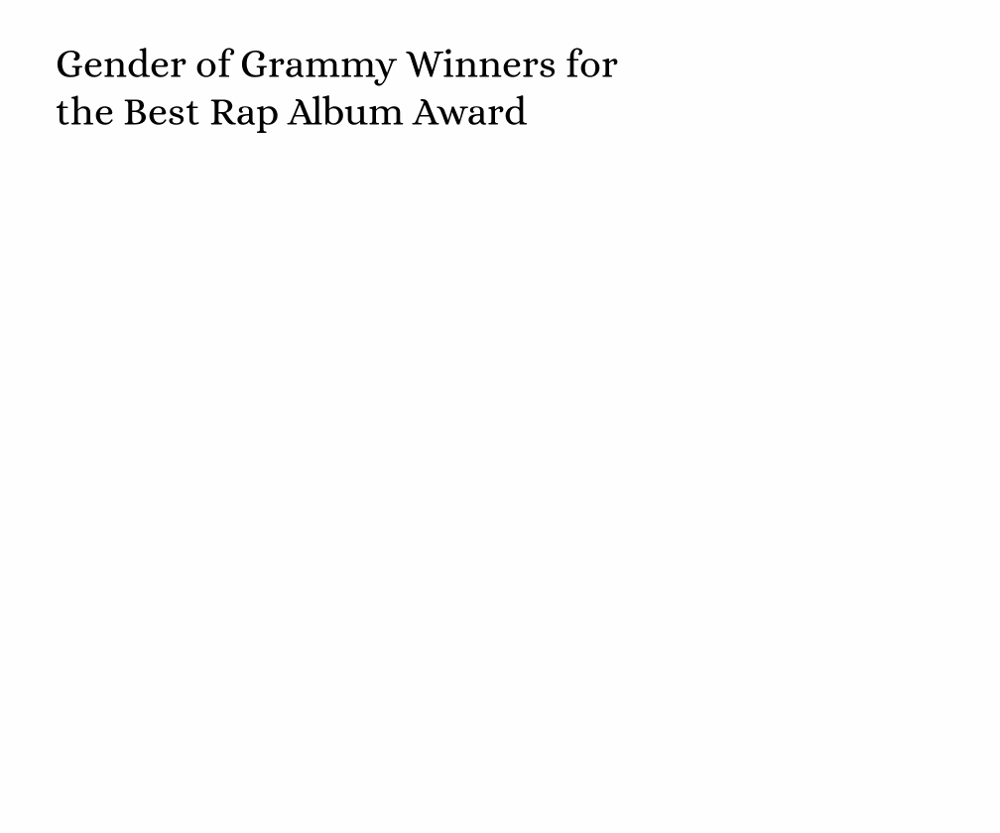

Women are Dominating the Music Industry, and the Grammys can Prove it

Mashable composite: Christopher Polk / Billboard via Getty Images; Kevin Mazur / Getty Images for The Recording Academy; Kevin Mazur / Getty Images for The Recording Academy; Kevin Winter / Getty Images for The Recording Academy.
Beyonce Becomes the First Black Woman to Win Best Country Album of the Year
This tool was by far the easiest to use. I just logged on the the Spotify website, copied the embed code, and pasted it directly to VS code. It fits with the story becasue Beyonce's album winning ending up being a historical momemt for Black women, and women accomplishing at the 2025 Grammys is what my story is about. This is directly the playlist that won. This could help engage audiences if viewers wonder what the music she won for sounds like. It's a quick easy way to find out.
Doechii is One of Three Female Artists to Ever Win the Best Rap Album Award
The Google GIF maker was also very easy to use. I just looked up how many awards each gender has one at the Grammys, and filled it in to the available text boxes. It fits with the story because this is also a monumental moment for women at this year's award show. The GIF shows how big of a deal Doechii's win actually is by showing the odds of her accomplishment. This GIF is engaging because it's simple, eye catching, and does a good job in displaying the data.
Chappell Roan Uses her Acceptance Speech to Encourage Free Health Care for Developing Artists
I tried to use the soundcite tool to include this event within my story, but ran into problem after problem using the soundcite tool. It ended up falling through, and I had to go with the Youtube video. The Youtube part was very easy, and just ended up being copying and pasting an embedded code. Her speech fits with the story because she took a stand, and did what a lot of artists are afraid to do; advocate. This was another amazing moment for females that fit well with my overall theme. I cut the video right at the beginning of her speech, so it hopefully will engage readers by showing them what the speech actually is, and not just talking about the details surrounding it. Viewers don't have to go anywhere else to find it, and can simply click play while reading the story.